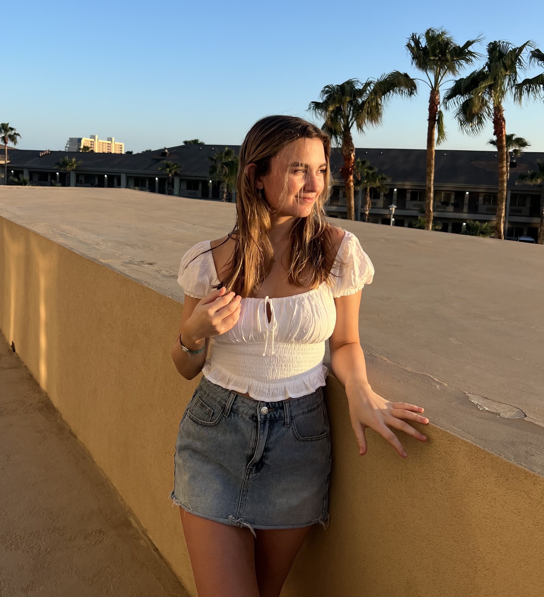

Hello! I am Maggie Holman
20 years old
I am a rising junior at the University of Michigan Engineering school studying Computer Science and minoring in UX Design! I have always loved designing along with science and math, so computer science is the perfect field for me to brigde my two passions!
More About My Art
Ever since I was little I have loved all mediums of art, my passion for creating is what makes me who I am! My grandma was an amazing artist and taught me the basics of color theory, perspective, and much more. Since her passing, art has been a great way for me to stay connected with her and continue both of our passions. I have participated in several art fairs and love talking with customers, it's a great feeling knowing there are people out there who enjoy the art I create! Oil painting has always been my favorites since that is the medium that my grandma taught me, however, I have dabbled in mediums such as clay, colored pencils, water color, digital design, and acrylic! Art will always be an important part of who I am and hope to incorporate it into many facets of my life!